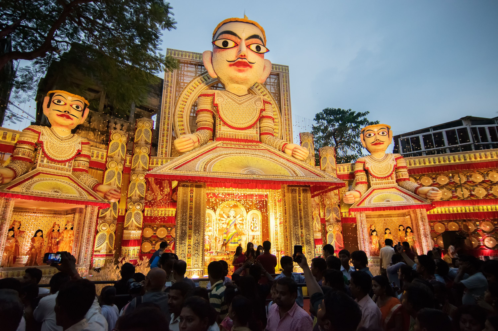
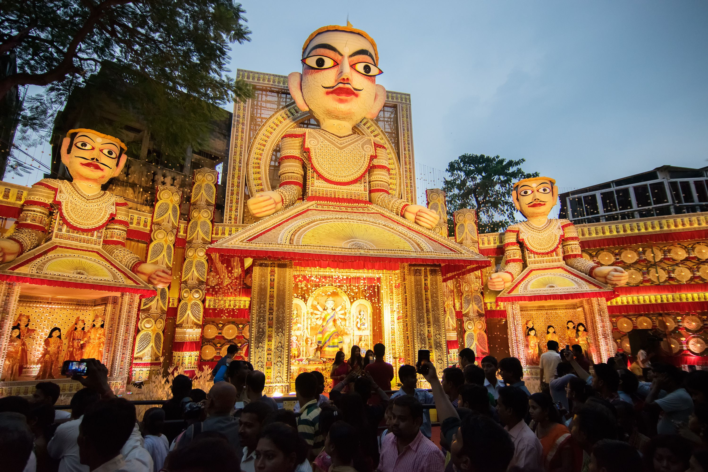

Pandals can get seriously crowded, but unless you go on a pandal-hopping binge, you will not get the true feel of the pujas. From Egyptian culture and London Olympics, to Thai-style pagodas, haunted houses, and eco-friendly ones created out of waste material, each pandal is a work of art with a specific theme.
Pandals are set up in every imaginable open space, overtaking roads, traffic circles, narrow streets and neighbourhoods. The pujas are spread over five days, so you can plan your days and cover different aspects of the festivities. Decide to do the morning puja scene over a day (or two), choose one part of the city and walk around visiting pandals. An all-night pandal-hopping spree is a must. Rent a car or take a well organised tour. Some of the bigger pandals get really crowded with entry lines that stretch on for several blocks. It could take you more than an hour to get inside it so consider buying a VIP pass to avoid the queues.